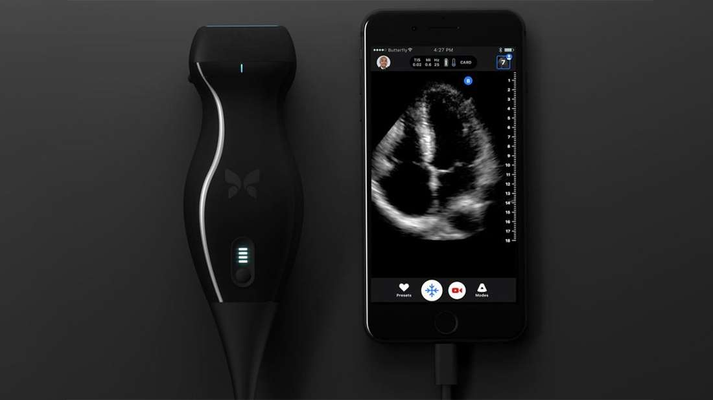

This Doctor Was Able To Detect His Own Cancer With An iPhone Gadget

John Martin, a vascular surgeon, noticed a strange, uncomfortable feeling in his throat. He
used the opportunity to test out the Butterfly IQ, a portable ultrasound machine that connects
to your smartphone. It's designed by the Butterfly Network, a start-up based in Guilford,
Connecticut, where Martin works as the chief medical officer.
First, he applied gel to his neck. Then, he ran the Butterfly IQ's probe on the area of his discomfort. A black-and-white image displaying a mysterious dark mass roughly 3 centimeters in length popped up on his iPhone. It turned out to be squamous-cell cancer.
Martin is not a cancer specialist, but he told reporters: “I was enough of a doctor to know I was in trouble.”
Ultrasound machines work by sending a series of sound waves into the body. These bounce back when they hit some tissue or an organ, producing an echo. The length of time it takes for the echo to return reveals the distance between the probe and tissue or organ. Different tissues also reflect sound to varying degrees.
These machines are pricey, in most cases costing $6,000 or more, but the Butterfly IQ will soon be available to purchase for a (relatively) measly $1,999.
Most devices generate sound using a vibrating crystal. The Butterfly IQ instead uses 9,000 micro drums engraved onto a semiconductor chip not much bigger than a postage stamp. That's what makes it so cheap in comparison to its competitors.
Martin told MIT Technology Review that “This gives you the ability to do everything at the bedside: you can pull it out of your pocket and scan the whole body.”
It could be especially useful to people living in remote regions and even for ambulance crews to scan patients before they get to the hospital.
While the image quality is not as high as more expensive machines, it outshines competitors when it comes to portability and accessibility. John Kendall, the ultrasound director at the emergency depart ment of Denver Health Medical Center, said that "the question is whether I can get to a diagnostic answer better. It’s infinitely portable. It’s not even the same genre of machine.”
The next step is to combine the technology with artificial intelligence software to help non-medics use the device and interpret the results.
As for Martin, since the self-diagnosis, he's undergone surgery and radiation treatment. He sees a future where people can use the Butterfly IQ at home, perhaps even using it to check one's kid for bone fractures.
“If you have a window into the body where anyone can afford it, everyone can use it, and everyone can interpret it, it becomes a heck of a lot more than an ultrasound device," said Martin.
First, he applied gel to his neck. Then, he ran the Butterfly IQ's probe on the area of his discomfort. A black-and-white image displaying a mysterious dark mass roughly 3 centimeters in length popped up on his iPhone. It turned out to be squamous-cell cancer.
Martin is not a cancer specialist, but he told reporters: “I was enough of a doctor to know I was in trouble.”
Ultrasound machines work by sending a series of sound waves into the body. These bounce back when they hit some tissue or an organ, producing an echo. The length of time it takes for the echo to return reveals the distance between the probe and tissue or organ. Different tissues also reflect sound to varying degrees.
These machines are pricey, in most cases costing $6,000 or more, but the Butterfly IQ will soon be available to purchase for a (relatively) measly $1,999.
Most devices generate sound using a vibrating crystal. The Butterfly IQ instead uses 9,000 micro drums engraved onto a semiconductor chip not much bigger than a postage stamp. That's what makes it so cheap in comparison to its competitors.
Martin told MIT Technology Review that “This gives you the ability to do everything at the bedside: you can pull it out of your pocket and scan the whole body.”
It could be especially useful to people living in remote regions and even for ambulance crews to scan patients before they get to the hospital.
While the image quality is not as high as more expensive machines, it outshines competitors when it comes to portability and accessibility. John Kendall, the ultrasound director at the emergency depart ment of Denver Health Medical Center, said that "the question is whether I can get to a diagnostic answer better. It’s infinitely portable. It’s not even the same genre of machine.”
The next step is to combine the technology with artificial intelligence software to help non-medics use the device and interpret the results.
As for Martin, since the self-diagnosis, he's undergone surgery and radiation treatment. He sees a future where people can use the Butterfly IQ at home, perhaps even using it to check one's kid for bone fractures.
“If you have a window into the body where anyone can afford it, everyone can use it, and everyone can interpret it, it becomes a heck of a lot more than an ultrasound device," said Martin.
[H/T: MIT Technology Review]
By Rosie McCall